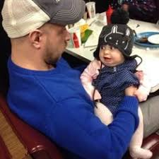

My name is Bucky Roberts.
I manage the "thenewboston" channel on YouTube.
If you visit this website, you have probably seen some of my awesomeee videos.
Or maybe somebody recommended you to visit my website, in order to learn programming.
I really like to teach programming.
programming is a very big olam tochen, and I think that in this era, everybody should try to get into it,
just as everybody has some basic knowledge on medicine, mathematics, etc..
The Artificial Intelligence domain is what I want to focus soon.
I am also experiment on Databases.
Networking and Networking Security are also some of the best interests in my opinion.
I spend a few hours a week creating and uploading videos, along a full-time job.
And the most important thing is that I really like tuna.
On every video where I can use tuna as an example to something, I will use it.
I recommend you to start watching my Web Development online videos, which are easy to follow, and are and easy and a
fun way to start at.
My expectations are that you will practice and try to do a website by yourself, and not only to watch my awesome
videos.
In a few weeks, you might have a website of your own! Without the need to take a course at the university and pass
an exhausting exam.
Besides programming, I like running, watching TV, playing on the computer, and eating - mainly tuna.
my photos

my playlist
Like me!
scan my code
Q&A
Question:
Explain 3 main differences between web1, web2 and web3?
Answer:
Web 1.0:
As for the client - this is " read only ". Low interactions between the user and the site's owners.
The user can only recieve information from the website but can not add anything to it, can not communicate with anyone else, and can not change it by any way.
Web 2.0
There are interactions between different users. Users are recommended to interact with each other in order to enjoy, to learn, and to maximize their web-surfing experience.
Web applications allow users to interact easily with themselves and with the server.
Web 3.0
AI algorithms are used in order to learn the user's habits, and recommend specific relevant contents to him.
Sites can interpret information like people, create and show information for their needs.